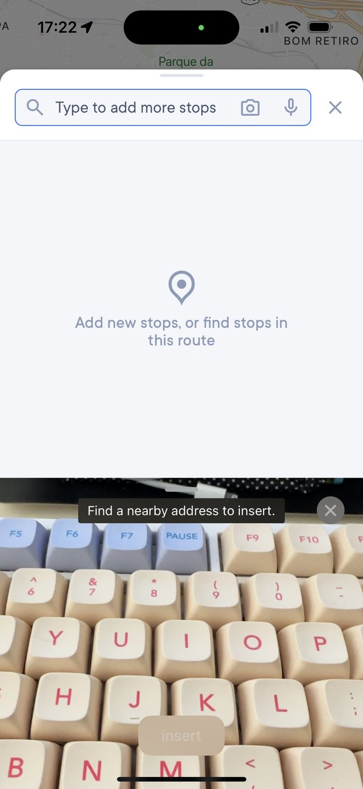
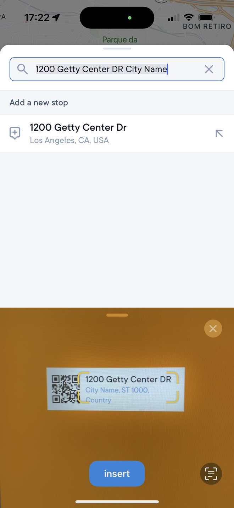

Address Scanner Feature
Enable drivers to quickly scan addresses through a tailored experience.
Good example of a day to day challenge where I spent quite some time collaborating with the team to get to the final solution.
Problem
The previous experience used Live Text technology, which was iOS-only and not tailored to Spoke’s users, though fast and easy to use.
We aimed to create a platform-agnostic solution without losing these benefits.


Adding stops
A single solution that works for iOS and Android. Brand aligned and well integrated with the rest of the app. Immersive, fast and flexible.
Finding stops
Opens a stop if the scanned address is already on their route.
Wrong address?
If the app shows the wrong result, the user can return to the regular search, edit the address using the keyboard, and add the stop to the route.
Highlights
- Prototyping using Protopie from the beginning to understand constraints and the scanner feeling in general.
- Experimented on different reading speeds to make sure it was natural to use.
- Tap to force text when scanner is not recognizing the address.
- Added a language selector on Android because of system constraints.
Follow up project
Package photo
We took the opportunity of them having the package in hand and we added a feature for users to add a photo of it.
Impact
Feature available on both platforms, Android users can now scan addresses. The adoption was fast and substantial.
Both platforms with the same experience.